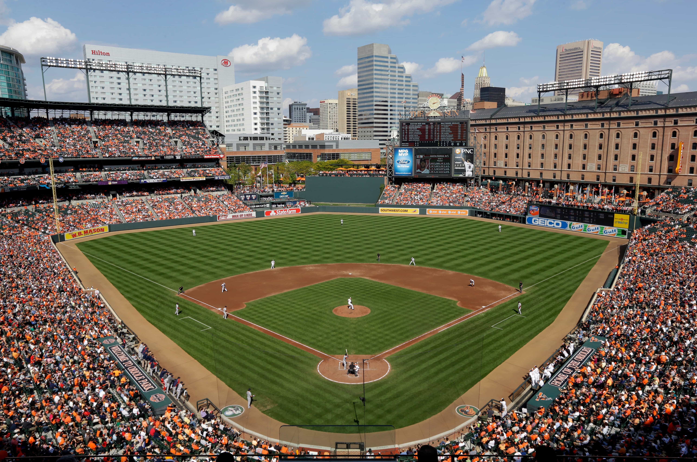

Baltimore Orioles
AL East
The Baltimore Orioles are an American professional baseball team based in Baltimore. The Orioles compete in Major League Baseball (MLB) as a member club of the American League (AL) East division. As one of the American League's eight charter teams in 1901, the franchise spent its first year as a major league club in Milwaukee, Wisconsin, as the Milwaukee Brewers before moving to St. Louis, Missouri, to become the St. Louis Browns in 1902. The Orioles adopted their team name in honor of the official state bird of Maryland. Nicknames for the team include the "O's" and the "Birds".